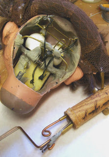
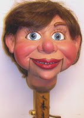

Finally!!!
12/30/2009
{kind=link}

{kind=link}

Poor little "Nick Nack" had his headpost broken from his head in an accident last Spring. He belongs to my cousin, Bonita Yoder, who brought him to me to see what I could do for him. It's always been my position that if the maker of any figure is still in the business it's better to have the figure returned to the original builder for needed repairs. It's easier for the one who designed and crafted the figure and mechanics to make any necessary repairs. And it should be faster.
My policy has always been to give priority to repairs necessary on any figure I made or sold, even if it meant working evenings and/or weekends. Unfortunately, Bonita has had difficulty making contact with his builder. Thus, poor Nick Nack has been out of commission for months. And then this past week when I learned from Bonita it was going to be sometime after March 1st before repairs would be made, I decided he had waited unattended long enough; further delay was unacceptable. So although a bit reluctantly, I did take him into my shop, disassembled his headpost and controls, studied the damaged linkage, successfully made necessary repairs, and now, finally, he's ready to return to action! (We're all breathing a sigh of relief!)